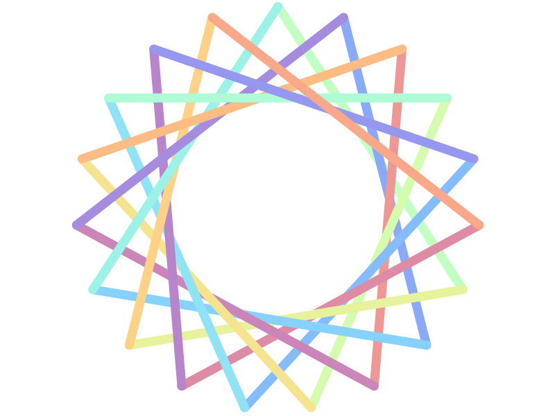

<script type="text/javascript" src="http://code.jquery.com/jquery-2.1.3.min.js"></script>
<script type="text/javascript">
window.onscroll = function (e) {
var position  =  window.scrollY;
var pixels = 2000;
var degrees  = (a / b) * 360;
$("#rotaro").css("-ms-transform","rotate("+degrees+"deg)");
$("#rotaro").css("-webkit-transform","rotate("+degrees+"deg)");
$("#rotaro").css("transform","rotate("+degrees+"deg)");
}</script>

<div style="height:4000px">
Initial Code, Modify to your liking. 

</div>
